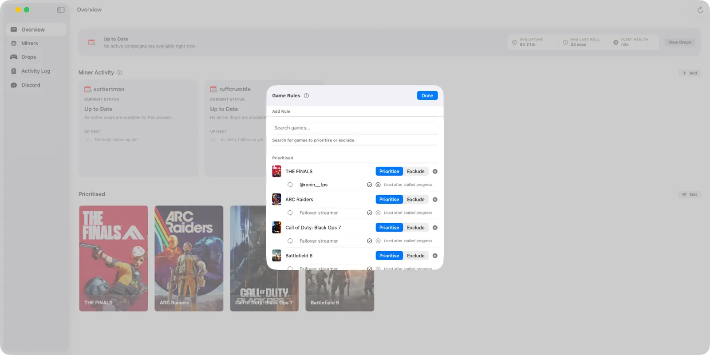

Open Settings > Mining > Manage Game Rules, or use the game-rule controls from the Overview. Each saved game can be set to Prioritise or Exclude. A prioritised game can also have one optional failover streamer.
Prioritise changes selection order. Exclude removes a game from mining. A failover streamer is a stall-recovery target, not the stream SwiftMiner normally starts with.
How SwiftMiner Chooses What to Mine
Before choosing a stream, SwiftMiner builds a list of campaigns that the current Twitch account can reasonably attempt. A campaign must be active, contain an unclaimed reward that can still be earned by watching, and pass your game rules and mining strategy.

SwiftMiner then looks for a live channel that is actually advertising the selected campaign. A channel merely playing the same game is not enough: Twitch can run several campaigns for one game, including campaigns restricted to particular channels or rewards that require paid subscriptions.
- Remove ineligible campaigns. Ended, disabled, fully earned, subscription-only, excluded, or otherwise unmineable campaigns are not normal watch candidates.
- Apply the mining strategy. The selected strategy determines how strongly the priority list affects campaign order.
- Try games in the resulting order. SwiftMiner checks live channels for the first game, then moves to the next game if no eligible channel can be verified.
- Verify the exact campaign. SwiftMiner confirms the channel is live and exposing the campaign before starting the watch session.
- Monitor progress. While watching, SwiftMiner continues checking inventory, campaign state, stream availability, and progress health.
Prioritised Games
A prioritised game is a game you want SwiftMiner to consider ahead of, or more deliberately than, ordinary campaigns. The order of the Prioritised list matters: the first game has a higher priority than the second, and so on.
| Mining strategy | How priorities are used |
|---|---|
| Smart | Campaigns ending soonest are considered first. If timing is equal, prioritised games and their configured order break the tie. |
| Prefer prioritised games | Prioritised games are considered before non-prioritised games. Their list order is respected, then campaign end time is used. |
| Only prioritised games | Non-prioritised games are ignored completely. If none of your prioritised games has an eligible live campaign, the miner waits. |
Prioritising a game does not guarantee that it can be mined. Twitch must still expose an active watch-based reward and at least one verifiable live channel. A priority also cannot turn a paid-subscription reward into a watch-time reward.
Unlinked publisher accounts
Some Drops require a separate publisher account, such as an EA, Ubisoft, Riot, or game-specific account. SwiftMiner keeps the warning visible. For a prioritised game, it may still attempt a campaign when Twitch exposes usable watch progress, but the reward may not be delivered to the game until the required account is linked.
It changes preference and visibility; it does not bypass Twitch eligibility, campaign dates, channel restrictions, subscription requirements, or publisher linking.
Global and Account-Specific Priorities
The Game Rules window manages the global priority list. By default, every miner inherits that list. Individual miners can also have their own priority list, set through the Web Dashboard or SwiftBot and reviewed or adjusted from the Miners view.
- Personal priorities come first: A miner's own games are placed before the global list.
- Global priorities follow: When Use global priorities is enabled for that miner, global games are appended after its personal games.
- Global priorities can be disabled per miner: The miner then uses only its personal list.
- Duplicates are removed: A game appearing in both lists is treated as one priority at its earliest position.
Exclusions are global. If a game is excluded, it is removed from campaign selection even if it also appears in an account-specific priority list.
Excluded Games
Excluding a game tells SwiftMiner not to mine campaigns for that game. Excluded games are filtered before campaign selection, so changing the mining strategy does not bring them back.
Use exclusions when you do not want rewards for a game, when a campaign is causing unwanted account-link warnings, or when you want miners to stay available for other campaigns.
- Exclusion applies to all connected miners.
- It takes precedence over global and account-specific priorities.
- It affects mining selection; it does not delete previously collected inventory or campaign history.
- Changing a rule can trigger a campaign rescan, but an active miner may take a short moment to settle onto its new target.
Failover Streamers
A failover streamer is an optional backup channel attached to a specific game rule. It exists for a narrow recovery case: SwiftMiner selected a valid stream, started watching, and later determined that reward progress genuinely stalled.
SwiftMiner performs its normal campaign and channel selection first. It does not start on the failover streamer simply because that streamer is online.
When the failover is used
When progress appears stalled, SwiftMiner first refreshes Twitch inventory to check whether rewards were claimed elsewhere or whether local state was simply behind. If there is no external progress to reconcile, SwiftMiner can consider the configured failover for that game.
Before switching, SwiftMiner verifies all of the following:
- The configured Twitch channel is currently live.
- The channel is advertising the exact campaign SwiftMiner is mining.
- The channel is not the same channel that just stalled.
- The failover is not currently in its cooldown period.
If any check fails, SwiftMiner falls back to its normal channel-switching behavior. It does not wait indefinitely for the backup streamer.
How to configure one
- Open Settings > Mining > Manage Game Rules.
- Add the game and set it to Prioritise or Exclude. Failover is most useful on prioritised games you actively want to complete.
- Enter a Twitch login in the Failover streamer field. You may enter
streamername,@streamername, or a Twitch channel URL. - Press Return or select the checkmark to save it.
SwiftMiner normalises the entry to the channel login. Display names, capitalisation, an @ prefix, URL query strings, and trailing channel paths are removed where possible.
Choosing a useful failover streamer
- Choose a streamer who regularly participates in Drops campaigns for that game.
- Prefer a reliable channel with long broadcasts during campaign periods.
- For channel-restricted campaigns, use an officially approved channel.
- Do not assume “Drops Enabled” means every campaign for the game is active on that channel.
- One game rule supports one failover streamer at a time.
Why a Failover May Not Be Used
| Situation | What SwiftMiner does |
|---|---|
| The channel is offline | Skips the failover and continues normal channel recovery. |
| Wrong campaign | Rejects the channel even if it is playing the correct game or advertises other Drops. |
| Paid-sub campaign only | Does not use the channel to mine a watch-time campaign that is not actually active there. |
| The failover also stalled | Places that game-and-channel combination on a ten-minute cooldown before it can be considered again. |
| No confirmed progress stall | Leaves normal selection in place. The failover is not used for preference alone. |
| The game is excluded | The campaign never reaches normal mining selection, so its failover is not used. |
| Twitch returns incomplete data | May reject the failover temporarily and retry through later recovery or campaign scans. |
How It Interacts with Other Stream Options
- Stream Override: A manual override takes control of streamer selection and is checked before normal selection. Failover behavior does not replace an active override.
- Prioritise followed and subscribed streamers: This influences normal channel ranking. A game failover remains a separate stall-recovery target.
- Spread miners across streams: This tries to distribute accounts during normal selection. A verified failover can still move a miner to its configured backup when that miner stalls.
- Stall recovery: Failover streamers complement progress-stall handling. Broader miner health recovery may also refresh, restart, or re-authenticate a miner depending on the failure.
Recommended Setups
A few favourite games
Use Prefer prioritised games, order your favourites, and add failovers only for games whose campaigns are important enough to warrant a known backup channel.
Mine anything before it expires
Use Smart. Priorities remain useful as tie-breakers, while campaigns ending sooner generally remain ahead. Exclude games you never want.
Strict allow-list
Use Only prioritised games. The miner waits when those games have no eligible live campaigns. This is the most predictable setup, but it can leave otherwise mineable Drops untouched.
Different games for different accounts
Give each miner personal priorities and disable Use global priorities where necessary. Remember that global exclusions still apply to every miner.
Troubleshooting Game Rules
- A prioritised game is waiting: Check campaign dates, available watch-based rewards, publisher linking, and whether any eligible channel is live.
- An excluded game still appears in history: Exclusions stop mining selection; they do not erase cached or completed campaign records.
- The wrong priority wins: Check the mining strategy. Smart favors the campaign ending soonest before using priority order.
- A personal priority is below another game: Review the miner's personal list, the global list, and whether Use global priorities is enabled.
- The failover never activates: It may not have reached the genuine-stall threshold, or the channel may be offline, on the wrong campaign, identical to the current stream, or cooling down.
- Progress still does not move: Avoid watching Twitch with the same account elsewhere, confirm required publisher links, and review the Activity Log for channel-verification and stall messages.
Campaign availability, account eligibility, stream campaign IDs, and progress are supplied by Twitch. Temporary or inconsistent Twitch data can delay selection or cause a valid-looking channel to be rejected until the next scan.